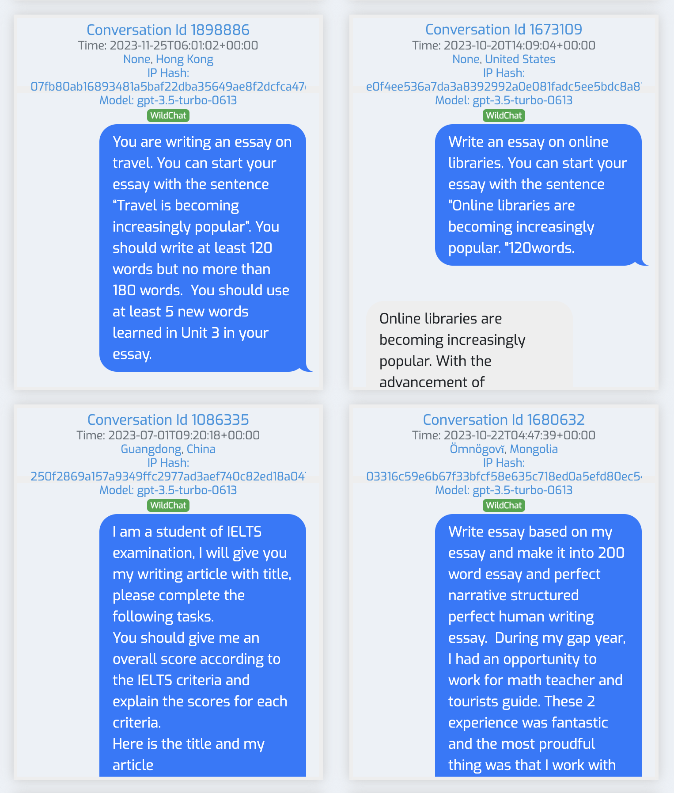
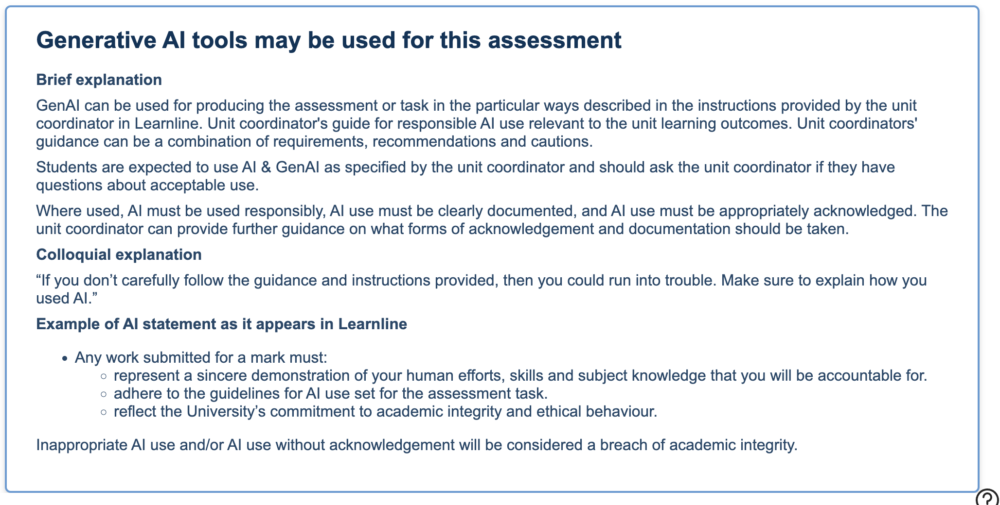
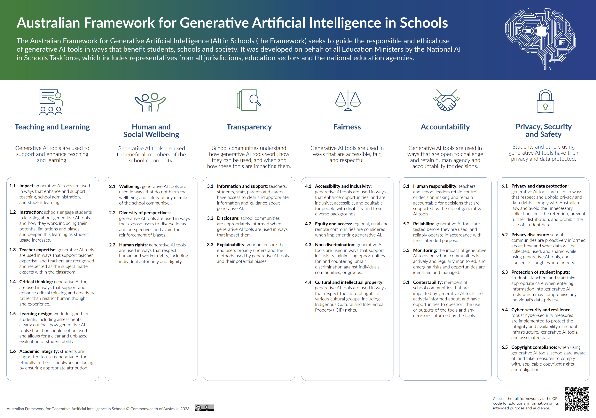

Academic Integrity in the AI Era
Generative AI has changed how students interact with information and complete academic tasks. Traditional assessment built around take-home written assignments is challenged when AI can produce a competent response to most prompts. Rather than escalating an arms race between AI generation and AI detection, leading institutions are rethinking what assessment is for: not catching misconduct, but ensuring authentic learning happens.
CDU encourages students to explore the benefits of AI and to discuss its use in the context of professional ethics and integrity. Staff clarify the extent to which AI may be used within each assessment item, and openness, transparency and disclosure are fundamental requirements. Today's tools also go well beyond basic text generation: Claude Projects and ChatGPT Projects let students upload entire course materials to build a personalised assistant, retrieval augmented generation pulls in external information, and chain-of-thought reasoning supports systematic problem-solving. The assumptions baked into older assessment need revisiting.

AI Detection Tools: An Evidence-Based Assessment
AI detection has become a focal point of integrity discussions, but independent evaluations repeatedly find current detectors unreliable under realistic conditions. A peer-reviewed international study led by Debora Weber-Wulff examined fourteen detection systems and found none achieved reliable accuracy across tasks, with paraphrased and hybrid text particularly problematic. Turnitin itself cautions that its AI detector "should not be used as the sole basis for adverse actions against a student": it cannot distinguish AI-assisted editing from full generation, has high false-negative rates, and gives students no visibility of the report. Detection tools have also been shown to flag work by non-native English speakers at higher rates, because the simpler, more patterned writing common in second-language work can resemble AI output.
At Australian Catholic University, nearly 6,000 students across nine campuses were flagged for alleged misconduct in 2024, around 90 per cent linked to suspected AI use, with many placed under suspicion for months and ultimately cleared on appeal. ACU piloted turning off its Turnitin AI Indicator in 2025. It is not an isolated retreat: a data investigation of 37 Australian universities found 36 had abandoned, never adopted or severely limited AI detection within 33 months, citing unreliability, false positives and equity concerns. Curtin University disabled AI writing detection from January 2026, and the University of Melbourne states that AI indicator scores are not proof.
The shift this points to is from detecting cheating to detecting learning. The goal of education is not preventing misconduct but ensuring authentic learning occurs, which means redesigning assessment to stay valid while embracing AI's educational potential.
Curtin disables AI detection (2026) · The ACU AI cheating scandal
AI Use Statements: A Better Approach
Rather than relying on unreliable detection, leading institutions are using AI Use Statements that ask students to disclose transparently how they used AI tools. This treats AI literacy as an essential graduate skill while keeping assessment honest. A good statement covers the tools used and for what purpose, how they were used (research, writing, editing, brainstorming, data analysis), the steps taken to verify AI-generated content, the student's own original contribution, and any errors or limitations they identified and addressed.

Statements can scale by course level: basic templates for introductory courses, structured reflection at intermediate level, and full declarations of methodology and ethics for capstone projects.
AI hallucinations are a chance to build verification skills. A student who identifies a hallucination, explains how they detected it, describes their verification process and reflects on the implications is demonstrating sophisticated academic skill, arguably more learning than a student who simply avoided AI entirely.
Assessment Reform Strategies
TEQSA emphasises that the most sustainable approach is to make assessment intrinsically resistant to outsourcing. Universities using "two-lane" models report fewer adversarial disputes and more authentic conversations about learning.
- Secure, supervised assessment
- In-person exams and vivas
- Practical demonstrations
- Assures the learning outcome directly
- AI assistance acceptable and transparent
- Disclosed through an AI use statement
- Focus on process and contribution
- Reflects real-world practice
Interactive oral assessments have proven particularly effective; a fifteen-minute conversation often reveals more about a student's learning than hours spent reviewing written work. Programmatic assessment maps learning outcomes progressively across a program, reducing assessment burden while creating coherent progression with milestone and stage-gate points. And authentic assessment, requiring personal, contextualised responses tied to a student's experience or placement, is inherently more resistant to AI outsourcing.
Australian University AI Policies
Australian universities have taken a range of approaches, from restrictive to permissive. The snapshot below is based on publicly available policy information gathered in late 2025; policies may have changed since.
| University | Approach | Disclosure |
|---|---|---|
| University of Sydney | Two-lane: AI-enabled and AI-restricted assessments from 2025 | Yes |
| University of Melbourne | Conservative, requires explicit permission | Yes |
| UNSW | Multi-lane approach, ChatGPT Edu access | Yes |
| Monash University | Comprehensive policy, Microsoft Copilot access | Yes |
| Charles Darwin University | Clear instruction and parameters required per item | Yes, GenAI acknowledgment |
| Curtin University | Permission required; AI detection disabled from January 2026 | Yes |
| University of Queensland | Three-option framework, set in the course profile | Yes, per course |
| Australian National University | Guided flexibility, Microsoft Copilot Enterprise | Yes, case-by-case |
CDU's position is to encourage students to explore the benefits of AI and share knowledge through communities of practice, while discussing AI use in terms of professional ethics and integrity. Staff clarify how much AI may be used in each assessment, and openness, transparency and disclosure remain fundamental.

AI Hallucinations and Citation Fabrication
An AI "hallucination" is an output that appears factually correct but is fabricated. These occur because language models predict statistically probable word sequences rather than retrieving verified facts; the model has no concept of truth, only patterns in language. Citation hallucination is especially damaging, because citations exist so readers can verify claims. When AI fabricates a reference complete with authors, journal, date and page range, it undermines the very mechanism academic work relies on, and a fabricated citation cannot be checked because the source does not exist (Cabezas-Clavijo and Sidorenko-Bautista, 2025).
There is also a snowball effect: research by Zhang and colleagues shows that once a model hallucinates, later outputs are more likely to build further fabrications on the error, so longer conversations can contain proportionally more fabricated content. In 2023, US lawyers filed court documents citing AI-generated cases that did not exist, with realistic names and page numbers, showing the professional and legal stakes beyond academia.
Search the exact title in quotation marks in Google Scholar, PubMed or a library database. If you cannot find it, assume it does not exist. Be suspicious of very generic author surnames, overly generic article titles, and references that seem too perfectly matched to your query.
The Cognitive Cost of AI Writing
As AI writing tools become commonplace, researchers are investigating an unexpected consequence: when students rely heavily on AI to write, their cognitive development may be affected. Writing is not just communication; it functions as mental exercise. When you write, working memory holds ideas while you organise them, language centres find the words, motor skills coordinate the act, and executive control manages it all at once. Brain scans show that people who write regularly have stronger connections between these regions.
The idea of "cognitive debt" describes what happens when AI handles too much of that work. Students who lean heavily on AI writing tools may show weaker engagement of memory and analytical networks when they later try to write without help. Young adults aged 18 to 25 may be particularly affected, since the prefrontal cortex, responsible for executive function, does not fully mature until the mid-twenties.
The goal is not to eliminate AI tools but to use them strategically while preserving the cognitive benefits of writing. Students who draft first before reaching for AI, who use it for research and editing rather than initial thinking, and who keep practising writing without assistance can stay cognitively fit while still benefiting from AI. For educators, this reinforces the value of assessment that requires students to demonstrate their thinking: oral assessments and in-class writing are both integrity measures and cognitive development activities.
International Perspectives on Academic Integrity
CDU serves a diverse student population, with many international students arriving from countries where norms around AI use vary widely. In some places AI use in academic work is actively encouraged; in others it is prohibited or simply undefined. There is no single "international student" experience. Students who adopted AI tools enthusiastically but recently may not yet have developed verification habits, and may not realise AI can fabricate citations or produce plausible misinformation. Conceptions of acceptable collaboration and external assistance also differ across educational traditions, so a student may genuinely not understand that a particular AI use is considered a breach in the Australian context.
Acknowledge that students may be meeting these frameworks for the first time. Clear, explicit guidance about what is and is not acceptable for each assessment is far more helpful than assuming a shared understanding of integrity conventions.
Teachers and ChatGPT
To close, a few teacher-perspective clips on living with AI in the classroom, from the challenges of assessment to practical classroom strategies.
// Teacher perspective on AI and academic integrity.
// AI, assessment and the classroom.